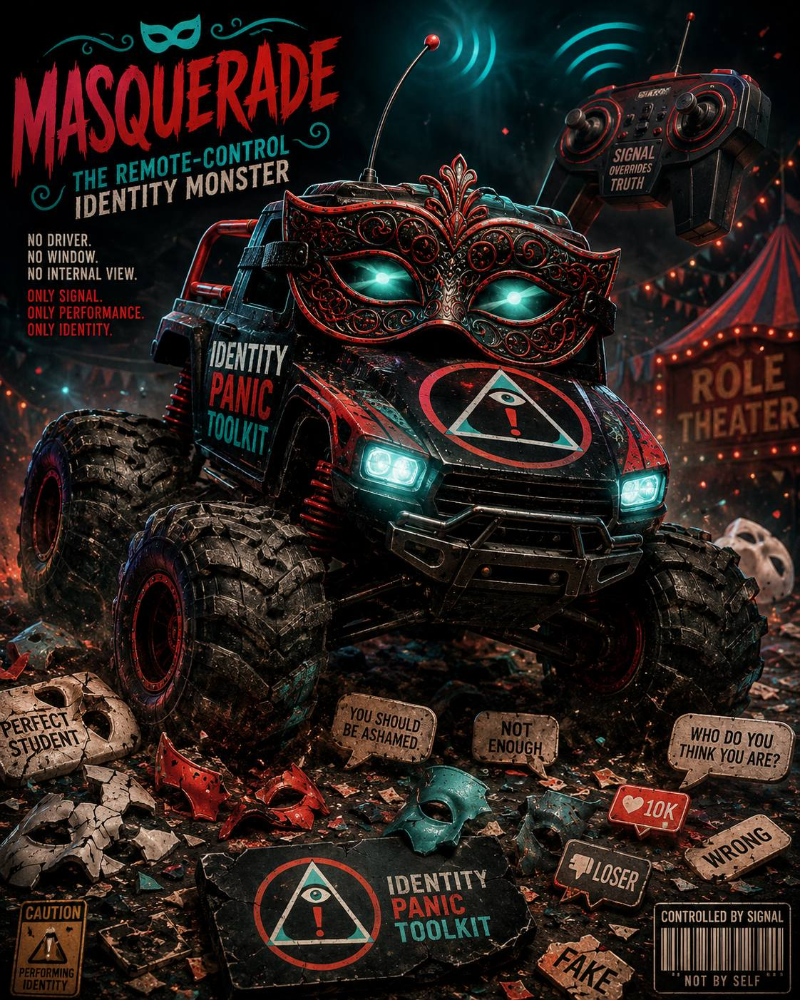
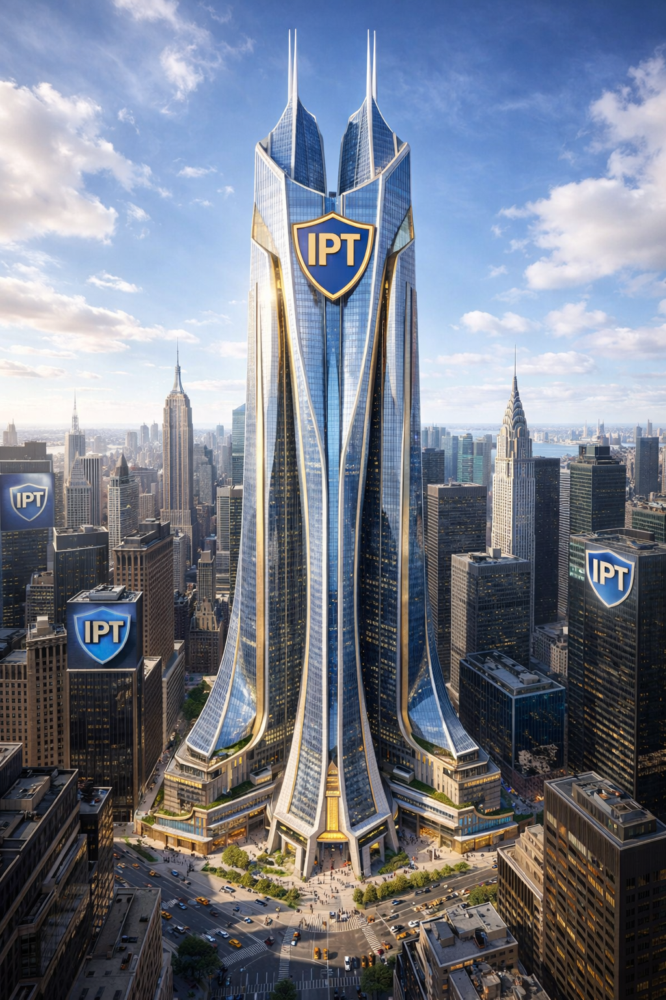
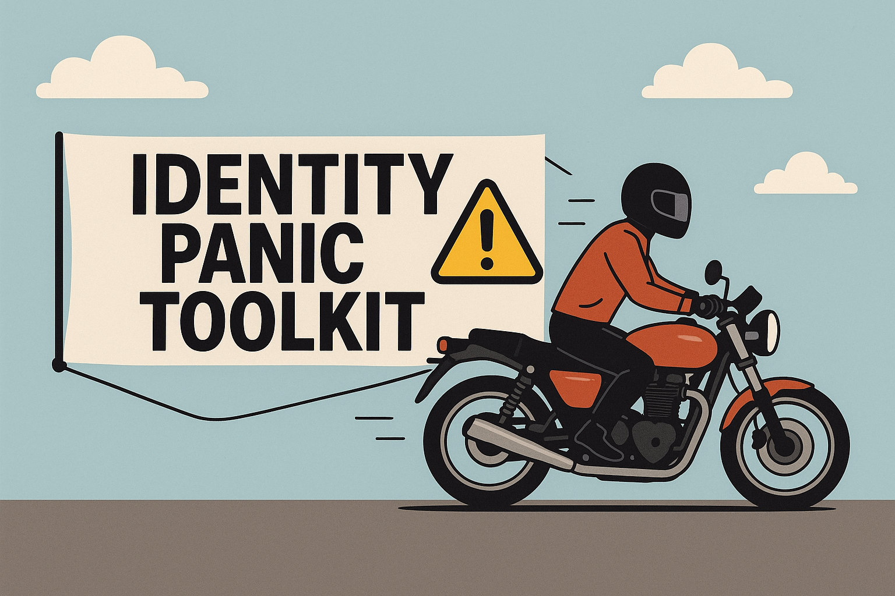
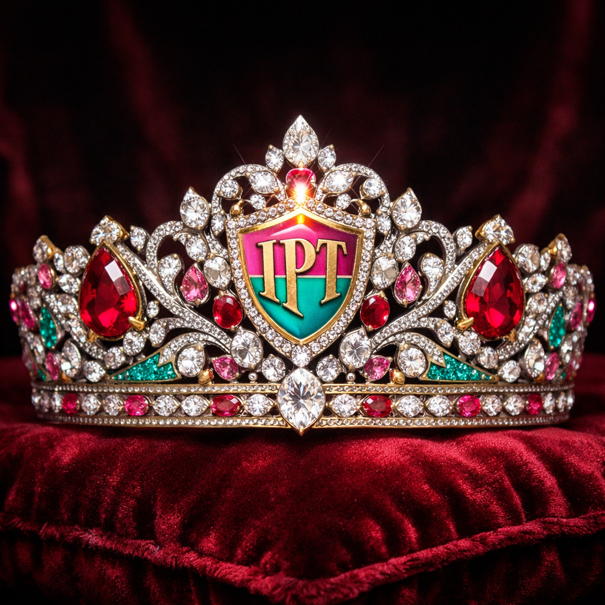
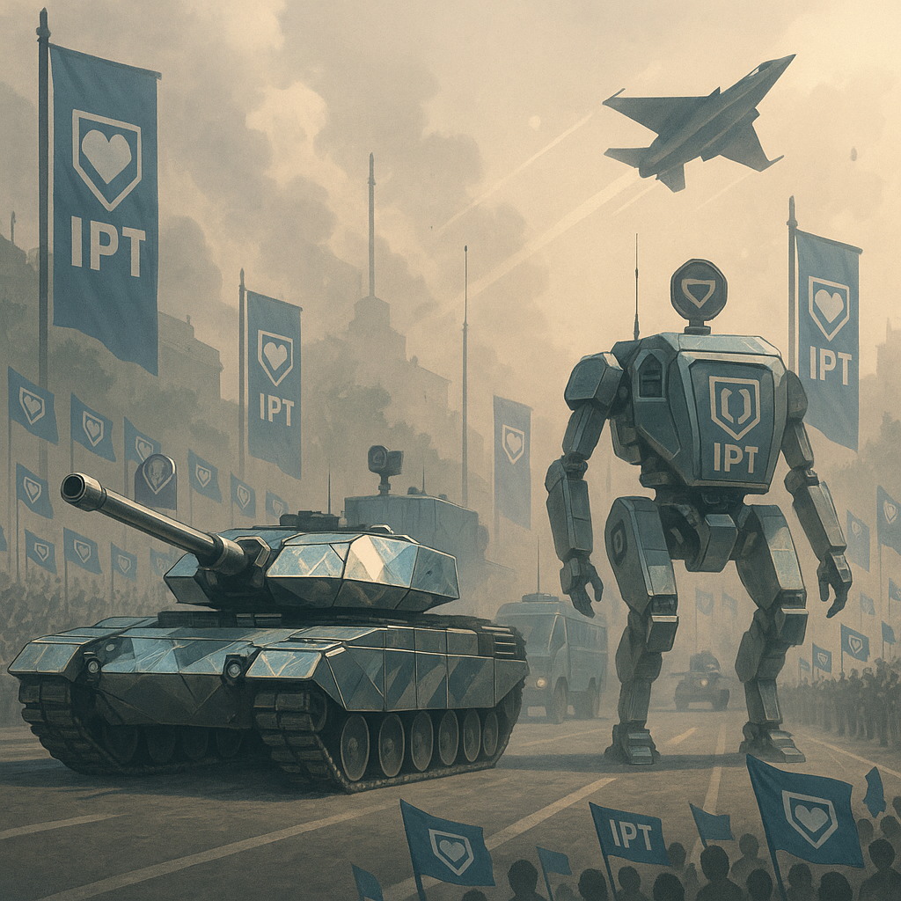
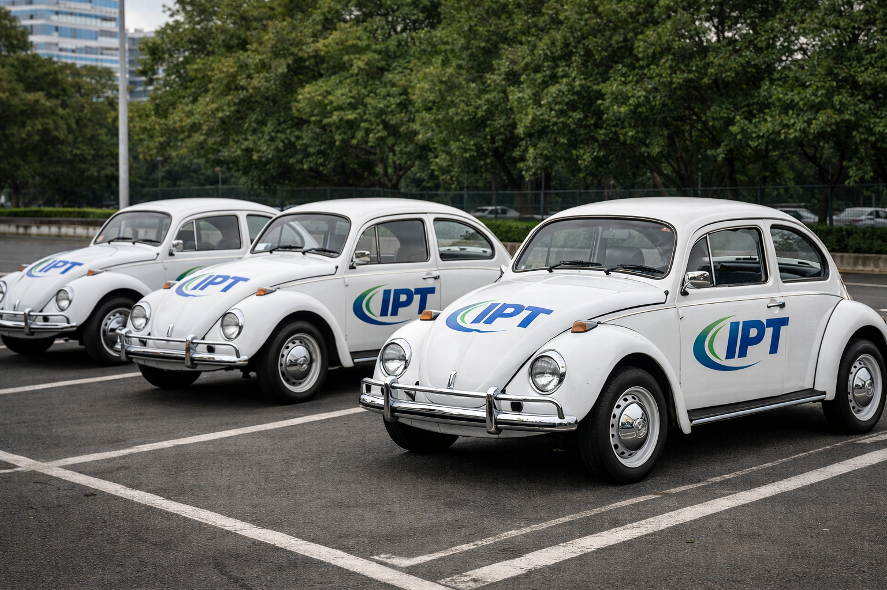
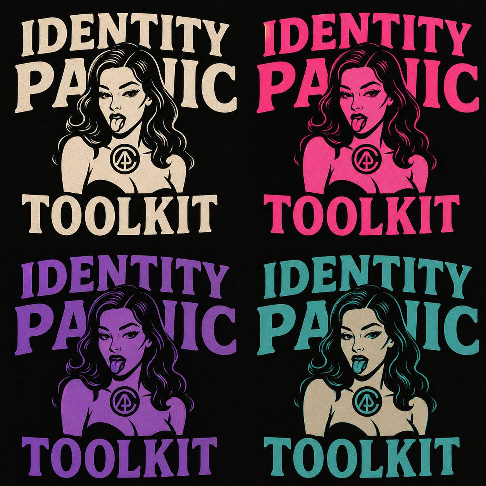

A collection of magazine covers, visual experiments, recovered exhibits, archive fragments, and printed artifacts gathered from across the Identity Panic Toolkit project. Some pieces began as standalone concepts, others as field notes, visual studies, or one-off publications that eventually found a home on the magazine floor.
This archive remains under active construction. Exhibits may expand, relocate, be reclassified, or disappear entirely as the collection continues to evolve. Visitors are encouraged to return periodically as new issues, recovered materials, and unexpected additions emerge from the stacks.





The mirror army wins battles by forcing their opponents to see themselves more clearly, absorbing hate and reflecting it back as empathy.

